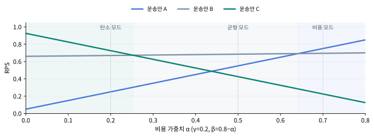

탄소예산이 바꾸는
파렛트 재배치
CBP
CARBON BUDGET POOLING
탄소예산 기반 유닛로드시스템
운영 최적화 프레임워크
현재 단계: 개념 모형과 추천 프로토타입
수치 사례: 설명용 가상 입력 · 현장 성과와 구분
수치 사례: 설명용 가상 입력 · 현장 성과와 구분
탄소예산 기반 유닛로드시스템
운영 최적화 프레임워크
CBP는 내부 탄소예산을 얼마나 사용했는지에 따라 파렛트 재배치의 평가 기준을 바꾸는 의사결정 규칙이다. 운영자는 기간 예산을 정하고, 실제 누적 배출을 예산으로 나눈 사용률(CUR)에 따라 비용·탄소·시간 여유의 비중을 조정한다. 공급 조건과 운영 한도를 통과한 후보만 비교하며, 추천과 실제 실행은 구분한다.
| 구분 | 보고서가 설명하는 내용 |
|---|---|
| 문제 | 파렛트 공급에는 비용·배출·도착시간의 절충이 있으며, 개별 선택을 기간 탄소예산과 연결할 규칙이 필요하다. |
| 제안 | CUR에 연동된 4단계 운영 모드와 재배치 우선순위 점수(RPS). 원안의 핵심 구조를 유지한다. |
| 보완 | 비용 한도와 공급·기한·호환·적재·예상 탄소 제약을 먼저 검사하고, 불가능한 경우 예외 판단을 요청한다. |
| 구현 | Python 추천 모형과 브라우저에서 여는 HTML 데모. 실제 회사 시스템·배차와는 연결하지 않았다. |
| 확인 | 가상 입력에서 모드에 따라 A→B→C로 추천이 바뀌며, 비용 한도·지연·예산 부족에 대한 분기가 작동한다. |
| 미확인 | 현장 비용·탄소 효과, 최적 가중치, 기간 전체의 최적성, 선행 연구·제품 대비 신규성. |
계산 결과는 공개한 입력과 규칙의 결과이다. 이를 실제 감축 실적이나 상용 시스템의 성능으로 확대하지 않는다. “최적화 프레임워크”라는 원제는 유지하되, 현재 구현은 주어진 후보 안에서의 상태 연동 추천이며 기간 전체의 전역 최적해를 구하는 알고리즘은 아니다.
근거 구분: [D1] 예선 원안, [D2] 공식 공문, [D4] 사용자 제공 피드백, [D5] V4 구현·검증 자료. 상세 목록은 26쪽.
빠른 이해: 2·4·6·12·14·15쪽.
계산 검토: 7–17쪽.
실현 가능성·검증: 18–23쪽.
질의응답·근거: 24–27쪽.
쪽수는 표지를 포함한다. 목차 항목을 누르면 해당 페이지로 이동하도록 링크를 설정했다.
유닛로드시스템은 화물을 파렛트·컨테이너 등의 단위로 묶어 운송·하역·보관하는 체계다. CBP의 첫 적용 대상은 이 중 풀링 네트워크의 빈 파렛트 공급·재배치다. 한 거점의 부족량을 다른 거점의 재고로 충족할 때, 출발 재고·차량·노선·도착시각의 조합에 따라 비용과 배출이 달라진다.
같은 수량을 기한 안에 공급할 수 있어도, 가장 저렴한 후보와 가장 배출이 적은 후보가 다를 수 있다. CBP는 이 절충 관계에 기간 탄소예산의 현재 상태를 추가한다. 모든 현장이 비용만으로 운영된다고 가정하거나 기존 시스템이 탄소를 고려하지 않는다고 단정하지 않는다.
이 보고서는 운영자가 정한 풀링 네트워크의 적용 범위에 하나의 탄소예산 B를 두고, 그 범위의 운행 실적을 함께 관리하는 상황을 가정한다. 거점별 예산 자동 배분이나 기업 간 탄소예산 거래는 현재 모형의 기능에 포함하지 않는다.
| 첫 적용에 포함 | 현재 구현에서 제외 |
|---|---|
| 동일 풀링사의 호환 파렛트 | 서로 다른 회사의 소유권·보증금·정산 통합 |
| 공급 요청 1건에 대한 완결 후보 비교 | 차량 경로 최적화·합배송 조합의 자동 생성 |
| 외부에서 확인한 재고·적재·안전 조건 입력 | 센서로 실물 재고·적재 안전을 직접 판정 |
| 기간별 내부 탄소예산과 운송 비용 한도 | 법정 배출권 거래·회계·인증의 자동 수행 |
| 담당자 검토를 위한 추천 | 실시간 WMS/TMS 연결·무인 자동 배차 |
처음부터 기업 간 플랫폼을 구축하면 자산 호환, 재고 신뢰도, 정산, 운행 권한 문제가 함께 발생한다. 동일 풀링사 안에서 입력을 확인할 수 있는 거점부터 시작하면, 제안한 선택 규칙 자체를 검증하기가 수월하다. 이 적용 가능성도 현장 자료로 확인해야 한다.
| 가정 | 의미와 확인 책임 |
|---|---|
| 후보가 이미 준비되어 있다 | 각 후보는 요청량을 보내는 하나의 완결 운송안이다. 후보 생성은 외부 계획 과정의 책임이다. |
| 입력의 산정 범위가 같다 | 비용과 배출은 후보마다 같은 포함 범위·기간·단위로 계산한다. |
| 현재 요청의 수량과 기한이 정해져 있다 | 요청량 Q와 허용시간 D를 입력한다. 모형이 임의로 줄이지 않는다. |
| 예산과 비용 한도를 운영자가 정한다 | B와 L은 정책 입력이다. 모형이 적정 예산을 자동 산출하지 않는다. |
| 추천은 실행 승인이 아니다 | 실행 직전 재고·차량·기한을 다시 확인하고, 담당자가 실행 여부를 결정한다. |
동적 가중치나 탄소예산 운영에 동일·유사한 선행 연구가 있는지는 별도로 조사해야 한다. 외부 원문 접근이 차단된 상태이므로 본 보고서는 신규성이 입증됐다고 주장하지 않는다.
| 단계 | 현재 구현 여부 |
|---|---|
| 입력 검증·CUR·모드·제약·정규화·추천 | Python 추천 함수에 구현. 입력은 직접 제공한다. |
| 사용률·비용 한도·지연에 따른 화면 변화 | HTML 데모에 구현. 가상 후보 3개를 사용한다. |
| 현장 확인·실행 승인·차량 배차 | 프로토타입 밖의 운영 단계. 자동 실행하지 않는다. |
| 실제 배출 수집·승인/취소/정산 원장 | 운영 설계로 제시. 거래 처리 시스템은 구현하지 않았다. |
운영 흐름 전체를 설명하는 것과 시스템 전체를 구현했다는 것은 다르다. 현재 구현 범위는 18쪽에서 다시 구분한다.
| 기호 / 코드 | 정의 | 단위·범위 |
|---|---|---|
| B / budget | 선택한 기간·거점 범위의 내부 탄소예산 | kgCO₂e, B>0 |
| Eₜ / used | 동일 기간·범위에서 정산된 실제 누적 배출 | kgCO₂e, Eₜ≥0 |
| Kₜ / committed | 확정됐으나 아직 Eₜ에 정산되지 않은 운행의 예상 배출 | kgCO₂e, Kₜ≥0 |
| Rₜ | 이번 추천 시 사용할 수 있는 잔여 탄소 한도 B−Eₜ−Kₜ | kgCO₂e, 음수도 가능 |
| CURₜ | 실제 배출 기준 탄소예산 사용률 100Eₜ/B | %, 100% 초과도 가능 |
| Q / demand | 이번 공급 요청량 | 파렛트 매수, Q>0 |
| D / deadline | 동일 기준시점부터 허용된 도착 소요시간 | 시간, D>0 |
| L / cost_limit | 이번 완결 운송안에 허용한 비용 상한 | 만원, L≥0 |
| j / id | 서로 구분되는 완결 운송 후보의 식별자 | 중복 없는 ID |
| qⱼ / supply | 후보에 배정할 수 있는 가용 파렛트 수량 | 매, qⱼ≥0 |
| aⱼ / capacity | 후보 운송안의 적재 가능 수량 | 매, aⱼ≥0 |
| Cⱼ / cost | 요청을 수행하는 완결 후보의 비용 | 만원, Cⱼ≥0 |
| êⱼ / emission | 후보를 실행했을 때의 예상 배출 | kgCO₂e, êⱼ≥0 |
| Tⱼ / arrival | 후보의 예상 도착 소요시간 | 시간, Tⱼ≥0 |
| α, β, γ | 비용·탄소·시간 여유의 가중치 | 각각 0 이상, 합계 1 |
| Fₜ / RPSⱼ | 허용 후보 집합 / 재배치 우선순위 점수 | 집합 / 무차원 점수 |
호환 여부 compatible와 적재 안전 확인 load_safe는 참/거짓 입력이다. 공급량·적재량은 매수 기준이며, 실제 차량의 중량·부피·적층 한계가 해당 수량을 허용하는지는 외부에서 확인해야 한다.
kgCO₂e는 이산화탄소환산량이다. 비용은 코드와 표 모두 만원 단위를 사용한다. 실제 수량 입력의 정수성·불리언 타입을 강제하는 검증은 운영 시스템에서 보강해야 한다.
모드를 정하는 CUR는 예선 정의대로 실제 누적 배출만 사용한다. 후보 허용 여부를 검사하는 잔여 한도 R에는 확정·미정산 예상 배출 K도 반영한다. 따라서 CUR가 같아도 K가 많으면 허용 후보가 줄어들 수 있다.
| 시점 | Eₜ | Kₜ | Rₜ | 해석 |
|---|---|---|---|---|
| 추천 직전 | 8,200 | 0 | 1,800 | B=10,000인 가상 상태 |
| 예상 200의 운행 확정 | 8,200 | 200 | 1,600 | 실제 배출은 아직 미정산 |
| 실제 230으로 정산 | 8,430 | 0 | 1,570 | E에 실제 230 추가, K에서 기존 200 해제 |
배출 단위: kgCO₂e. 정산 후 CUR=84.3%. 실제 배출이 예상보다 30 많아 잔여 한도가 확정 시점보다 30 줄어든다.
예상 배출이 실제와 다를 수 있으므로 후보를 잔여 한도 안에서 선택해도 기간 예산 준수를 보장할 수 없다. 예산 초과 가능성은 22쪽의 평가 지표로 별도 기록한다.
허용 후보 집합 Fₜ는 아래 조건을 모두 충족하는 후보로 구성한다. 점수가 높은 후보라도 한 가지 필수 조건을 만족하지 못하면 평가에서 제외한다. 제외 사유는 후보별로 모두 남긴다.
| 검사 | 허용 조건 | 검사의 의미 |
|---|---|---|
| 공급량 | qⱼ ≥ Q | 요청량만큼 배정할 재고가 있음 |
| 적재 가능량 | aⱼ ≥ Q | 요청량을 운송할 수 있음 |
| 규격 호환 | compatible = true | 풀링 자산·사용 조건의 호환을 사전 확인 |
| 적재 안전 | load_safe = true | 적층·고박·중량·부피 등의 안전을 사전 확인 |
| 기한 | Tⱼ ≤ D | 예상 도착이 허용시간 이내 |
| 비용 | Cⱼ ≤ L | 운영자가 정한 비용 상한 이내 |
| 탄소 | êⱼ ≤ Rₜ | 예상 배출이 잔여 탄소 한도 이내 |
Fₜ가 비면 추천 ID를 비워 두고 exception_required를 반환한다. 담당자는 대체 재고·차량 확보, 기한 협의, 비용 또는 탄소예산 예외 승인 등을 검토한다. 어떤 조건을 변경했는지 기록하고 새 입력으로 다시 계산한다. 계산기가 요청량이나 기한을 자동 완화하지 않는다.
현재 코드는 제공된 숫자와 참/거짓 값이 조건을 만족하는지 확인한다. 재고가 실제로 존재하는지, 차량이 정말 안전하게 적재할 수 있는지, 도착 확률이 충분한지를 검증하지 않는다. 이는 데이터 확인과 운송 담당자의 책임이다.
탄소 비교에는 부동소수점 오차 대응으로 10⁻⁹kg의 수치 허용오차를 둔다. 실제 운행 오차를 허용하는 안전 여유나 정책적 예산 예외를 뜻하지 않는다.
| CUR 구간 | 모드 | α 비용 | β 탄소 | γ 시간 |
|---|---|---|---|---|
| CUR < 60% | Cost / 비용 | 0.70 | 0.10 | 0.20 |
| 60% ≤ CUR < 75% | Balanced / 균형 | 0.50 | 0.30 | 0.20 |
| 75% ≤ CUR < 90% | Carbon / 탄소 | 0.20 | 0.60 | 0.20 |
| CUR ≥ 90% | Emergency / 긴급 | 0.10 | 0.80 | 0.10 |
막대 색상: 파랑=비용, 청록=탄소, 금색=시간 여유. 모든 가중치의 합은 1이다.
60%는 균형 모드, 75%는 탄소 모드, 90%는 긴급 모드에 들어간다. 모드는 화면에 반올림한 숫자가 아니라 계산된 CUR로 선택한다. 실제 누적 배출이 예산을 넘어서면 CUR가 100%를 넘을 수 있으며 모드는 긴급으로 분류된다. 다만 잔여 탄소 한도가 부족하면 후보는 별도로 제외된다.
60·75·90%와 네 가중치 조합은 예선 원안의 초기 설계값이다. 원래 아이디어를 일관되게 설명하기 위해 유지했다. 데이터로 추정한 최적 경계나 보편적으로 유효한 정책값으로 제시하지 않는다. 실제 적용에서는 경계·가중치·예산 수준을 함께 조정해야 한다.
비용 우선 대조군은 (1,0,0), 고정 가중치 대조군은 (0.5,0.3,0.2)로 정의한다. 이는 본 보고서가 정한 비교 정책이며 실제 산업의 모든 운영 방식을 대표하지 않는다.
비용·배출·시간은 서로 단위가 다르므로 원래 숫자를 바로 더하지 않는다. 허용 후보 집합 Fₜ를 기준으로 비용과 예상 배출을 0–1 점수로 바꾸고, 시간 여유도 같은 범위로 나타낸다.
비용과 배출은 작을수록 높은 점수다. 어떤 항목의 최대값과 최소값이 같으면 분모가 0이 되므로 그 항목은 모든 후보에 1점을 부여한다. 시간은 후보가 0≤Tⱼ≤D를 통과했으므로 0–1 사이가 된다. 시간 여유 점수는 정시 도착 확률이나 서비스 신뢰도를 의미하지 않는다.
후보가 달라지면 min·max도 바뀐다. 따라서 다른 후보 집합 사이의 RPS를 그대로 비교해 성과가 개선됐다고 말할 수 없다. 이는 비용 한도로 C를 제외하는 사례에서 확인한다. 한 후보만 남으면 비용·탄소 점수는 모두 1이 된다.
| 공통 입력 | 값 | 설명 |
|---|---|---|
| 요청량 Q | 1,000매 | 하나의 수요 거점에 공급 |
| 허용시간 D | 8시간 | 동일한 판단 시점부터 측정 |
| 기간 탄소예산 B | 10,000kgCO₂e | 내부 관리 예산 |
| 실제 누적 배출 Eₜ | 8,200kgCO₂e | CUR=82% |
| 확정·미정산 예상 배출 Kₜ | 0kgCO₂e | 잔여 한도 Rₜ=1,800kgCO₂e |
| 운송 비용 한도 L | 140만원 | 세 후보 모두 비용 조건 통과 |
| 운송안 | 비용 Cⱼ | 예상 배출 êⱼ | 도착 Tⱼ |
|---|---|---|---|
| A | 100만원 | 400kgCO₂e | 6시간 |
| B | 110만원 | 260kgCO₂e | 4시간 |
| C | 140만원 | 200kgCO₂e | 3시간 |
세 후보 모두 공급 가능량 1,000매, 적재 가능량 1,000매, 규격 호환 참, 적재 안전 확인 참으로 입력했다. 공급·적재·호환·안전을 현장에서 검증한 자료가 아니라, 계산 설명을 위한 공통 가정이다. 비용은 요청량을 공급하는 완결 운송안의 비용으로 취급한다.
같은 후보의 입력을 고정하고 가중치만 바꾸면 선택이 어떻게 달라지는지 보여 준다. 실제 현장의 비용 절감률·탄소 감축률·회수율·회전율 또는 기간 전체의 운영 성과는 입증하지 않는다. 비용과 배출이 항상 함께 줄어드는 사례도 아니다.
| 후보 | 비용점수 | 탄소점수 | 시간여유점수 |
|---|---|---|---|
| A | 1.000 | 0.000 | 0.250 |
| B | 0.750 | 0.700 | 0.500 |
| C | 0.000 | 1.000 | 0.625 |
각 점수는 0–1 범위이며 서로 다른 의미를 가진다. 시간 여유가 0.625라는 것은 허용시간 중 62.5%가 도착 후 남는다는 뜻이다. 실제 도착의 확률을 뜻하지 않는다.
| 후보 | 비용 모드 | 균형 모드 | 탄소 모드 | 긴급 모드 |
|---|---|---|---|---|
| A | 0.7500 | 0.5500 | 0.2500 | 0.1250 |
| B | 0.6950 | 0.6850 | 0.6700 | 0.6850 |
| C | 0.2250 | 0.4250 | 0.7250 | 0.8625 |
| 모드별 최고점 후보 | 비용 | 균형 | 탄소 | 긴급 |
|---|---|---|---|---|
| 선택 | A | B | C | C |
| 정책 | CUR 50% | CUR 68% | CUR 82% | CUR 93% |
|---|---|---|---|---|
| 비용 우선 (1,0,0) | A | A | A | A |
| 고정 (0.5,0.3,0.2) | B | B | B | B |
| CBP 상태 연동 | A | B | C | C |
모든 상태에서 B=10,000, K=0, 비용 한도=140만원이고 세 후보가 모두 허용된다. 예를 들어 CUR 93%에서도 잔여예산은 700kg이므로 가장 배출이 큰 A의 400kg을 허용한다. 따라서 이 비교에서는 후보 탈락이 아니라 가중치 변화가 선택 차이를 만든다.
모드별 계산 12개 값은 분수 연산으로 독립 재계산해 추천 모형의 출력과 대조했다. 19쪽 참조.
CUR 82%에서 C는 비용 조건을 위반해 제외된다. A·B만 남으므로 비용 범위는 100–110만원, 배출 범위는 260–400kg이 된다. 정규화를 다시 계산해야 한다.
| 허용 후보 | 비용점수 | 탄소점수 | 시간여유 | 탄소 모드 RPS |
|---|---|---|---|---|
| A | 1 | 0 | 0.25 | 0.250 |
| B | 0 | 1 | 0.50 | 0.700 |
원래 세 후보에서 B의 점수는 0.670이었다. 후보 집합이 달라졌으므로 점수도 달라진다. 0.700과 0.670의 차이를 B의 실제 성능 향상으로 해석하지 않는다.
| 변경 조건 | 계산·허용 상태 | 반환 결과 |
|---|---|---|
| C 도착 9시간 | 허용시간 8시간 초과, C 제외 | B 추천 |
| 비용 한도 99만원 | 최저 비용 A도 100만원 | 후보 없음 |
| E=9,800, K=0 | R=200kg, C만 배출 한도 충족 | C 추천 |
| E=9,800.01, K=0 | R=199.99kg, 최소 배출도 200kg | 후보 없음 |
| E=8,200, K=1,700 | R=100kg | 후보 없음 |
| 공급·적재량 999매 또는 호환/안전 거짓 | 해당 후보를 각각의 사유로 제외 | 나머지 후보 재평가 |
가상 사례에서 C는 배출이 가장 적지만 비용은 가장 높다. 가중치가 C를 추천했다고 해서 추가 비용이 경제적으로 적정하다는 판단까지 끝난 것은 아니다. 비용 한도와 기업의 탄소 목표를 설정한 이유가 필요하다.
| 전환 | 추가 비용 | 예상 배출 감소 | 차이의 비용/배출 환산 |
|---|---|---|---|
| A → B | 10만원 | 140kgCO₂e | 약 71.43만원/tCO₂e |
| A → C | 40만원 | 200kgCO₂e | 200만원/tCO₂e |
| B → C | 30만원 | 60kgCO₂e | 500만원/tCO₂e |
위 값은 특정 가상 입력 간 추가 비용과 예상 배출 감소의 비율이다. 실제 시장 탄소가격, 사회적 탄소비용, 검증된 한계감축비용 곡선으로 사용할 수 없다. 후보마다 비용·배출의 산정 경계가 다르면 이 비교 자체도 성립하지 않는다.
총비용과 실제 배출을 동시에 보고하고, 정시 공급이나 예외 빈도가 악화되지 않았는지 함께 확인한다. 배출이 감소했더라도 비용이 크게 증가하면 그 대가를 명시한다. 한도와 가중치를 실험 결과에 유리하게만 선택하지 않는다.
세 후보가 모두 허용되는 동일 가상 입력에서 시간 가중치 γ=0.2를 고정한다. 비용 가중치 α를 0–0.8 범위에서 바꾸고 탄소 가중치는 β=0.8−α로 둔다. 이 조건은 γ=0.1인 긴급 모드를 포함하지 않는다.

| 비용 가중치 구간¹ | 최고점 후보 | 의미 |
|---|---|---|
| α < 53/210 ≈ 0.252381 | C | 탄소 비중이 상대적으로 큼 |
| 53/210 < α < 61/95 ≈ 0.642105 | B | 비용과 탄소의 절충 구간 |
| α > 61/95 | A | 비용 비중이 상대적으로 큼 |
¹ 정확한 경계에서는 두 후보가 동점이다. 이론적 동점에 배출 우선 규칙을 적용하면 첫 경계는 C, 둘째 경계는 B가 선택된다. 실제 구현은 소수점 12자리 비교를 사용한다.
원안의 비용 모드 α=0.7, 균형 모드 α=0.5, 탄소 모드 α=0.2가 각각 A·B·C 구간에 놓인다. 이는 선택의 민감도를 설명하며, 어떤 가중치가 현실에서 최적이라는 증거는 아니다.
| 기능 | Python 모형 | HTML 데모 |
|---|---|---|
| 입력 후보 | Plan 객체 목록 | A·B·C 가상 후보 고정 |
| 상태 입력 | B, E, K, Q, D, L | CUR·비용 한도 조절 |
| 지연 변화 | 후보 arrival 수정 | C안 9시간 지연 체크 |
| 제약 검사 | 공급·적재·규격·안전·기한·비용·탄소 | 기한·비용·탄소 검사; 나머지는 충족 가정 |
| 점수·추천 | 모드·정규화·RPS·동점·예외 | 같은 가상 조건에서 점수·추천·제외 사유 표시 |
| 대조 정책 | CBP / Fixed / CostOnly | CBP만 시각화 |
| 외부 연결 | 없음 | 없음 |
추천 함수는 정책, CUR, 모드, 가중치, 잔여 한도, 후보별 제외 사유, 허용 후보의 점수, 추천 ID와 상태를 반환한다. 후보가 없으면 점수 집합은 비어 있고 추천 ID는 없음으로 반환한다. 기본 입력 자체가 잘못되면 예외를 발생시킨다.
HTML 데모는 ZIP을 푼 뒤 브라우저에서 열 수 있다. 브라우저용 코드는 서버 없이 동작하며, Python 코드와 자동 연동되는 서비스는 아니다.
| 검증 묶음 | 확인 내용 | 결과 |
|---|---|---|
| 모형 내부 조건 점검 | 임계값·점수·비용·기한·공급·적재·호환·안전·예산·동점·잘못된 입력 | 1,039회 조건 점검 통과 |
| 연속 상태 경계 점검 | E를 0–10,000kg에서 10kg 간격으로 바꾸는 1,001개 입력 | 위 1,039회에 포함 |
| 독립 산술 대조 | 3후보×4모드의 RPS를 Fraction 분수 연산으로 재계산 | 12개 점수 일치 |
| 브라우저 시나리오 | 50/68/82/93%, 비용120, 예산 부족, C 지연 | 7개 시나리오 통과 |
| 실제 화면 조작 | 비용 한도 변경과 후보 없음 상태의 표시 갱신 | 2개 화면 전환 통과 |
| 단위·경제성 산술 | A→C와 B→C 추가 비용/배출 환산 | 200·500만원/t 일치 |
1,039는 1,039개의 현장 운행이나 독립 실증을 뜻하지 않는다. 반복 입력을 포함한 코드 내부 조건 확인 횟수다. 통과는 정의한 규칙이 해당 입력에서 작동함을 보여 주며, 모든 가능한 입력이나 운영 장애가 검증됐다는 뜻은 아니다.
cbp_model.py, model_results.json, scenario.csv에 입력과 결과가 있다. 브라우저 동작은 verify_demo.cjs, 보고서의 독립 산술 대조는 calculation_audit.json으로 기록한다. 기준 구현 파일의 SHA-256을 기록해 어떤 코드에 대한 검증인지 구분한다.
기준 구현 SHA-256:
917d73b57889597b5c3a037aae9db4dc1c8bc2f4dcb724835b1d63af3a1c73cc
상용 적용 전에는 수량의 정수성·불리언 타입·입력 누락·데이터 신선도 검증을 보강해야 한다. 현 프로토타입은 타입 주석이 모든 입력 타입을 강제하지 않는다.
배출량 입력이 일관되지 않으면 정교한 점수 계산도 의미가 없다. 실증 전에 기간, 거점, 운송 구간, 배출 종류와 포함 활동을 정의하고, 모든 후보와 실제 실적에 같은 원칙을 적용해야 한다.
| 데이터 묶음 | 필요 항목 | 품질 확인 |
|---|---|---|
| 공급 요청 | 요청 ID, 거점, 규격, 수량, 마감 | 수량·마감 변경 이력, 중복 요청 |
| 가용 재고 | 거점별 재고, 이미 배정된 수량, 인계 가능 시각 | 실물과 장부 차이, 갱신 시각 |
| 운송 후보 | 차량, 노선, 적재 가능량, 예상 시간 | 중량·부피·적층·안전 확인 |
| 비용 | 운임, 추가 작업, 대기·우회 등 포함 항목 | 후보별 같은 포함 범위, 세금·정산 기준 |
| 예상 배출 | 활동량, 계수 출처·버전, 계산 범위 | 단위와 기간, 공차·우회·공동운송 배분 |
| 실제 실적 | 도착·공급 수량, 실제 비용·운행 자료 | 요청·후보·운행 ID 연결 |
| 상태 원장 | B, E, K, 승인·취소·정산 이력 | 중복 차감·누락·기간 경계 |
활동량은 사용 가능한 자료에 따라 연료 사용량, 거리, 화물 운송량 등으로 정의할 수 있다. 서로 다른 방법이나 산정 범위를 무심코 섞지 않는다. 복귀편 활용을 비교할 때도 추가 우회·적재·대기 등 포함 범위를 정해야 한다. 본 보고서는 특정 배출계수를 선택하거나 실측에 적용하지 않았다.
후속 확인 대상으로 GLEC Framework와 ISO 14083 등 물류 배출 산정 자료를 검토할 수 있다. 이번 작업에서는 원문을 읽지 못했으므로 준수·인증 또는 해당 표준에 따른 산정 완료를 주장하지 않는다.
동일한 초기 재고·예산·요청 순서를 두고 비용 우선, 고정 가중치, CBP를 비교한다. 각 정책의 선택 이후에는 재고·확정 운행·누적 배출을 따로 갱신한다. 과거에 실제로 선택한 안만 남아 있으면 선택되지 않은 대안의 결과는 관측되지 않으므로, 후보 재구성과 추정 가정을 명시해야 한다.
현장에서 들어오는 요청에 추천 결과를 생성하되 실제 배차는 담당자가 기존 절차로 수행한다. 추천 후보가 재고·시간·적재·비용 측면에서 가능한지, 데이터가 늦거나 누락되지 않는지 확인한다. 채택되지 않은 추천의 실제 결과가 없다는 한계도 기록한다.
협조 가능한 동일 풀링사의 소수 거점에서 승인된 범위로 추천을 실행한다. 실행 전 확인, 대체 조달, 예산 예외, 중단 조건을 정한다. 기간·요청 수·예산 수준은 실제 운영량과 자료 확보 상황에 맞춰 정하며, 현재 확정한 협력사나 실증 일정은 없다.
| 동일하게 통제할 것 | 정책별로 달라지는 것 |
|---|---|
| 초기 재고·초기 예산·요청 순서 | 각 요청에서 선택하는 후보 |
| 후보 생성 규칙·입력 정보·산정 경계 | 선택 이후의 재고·누적 배출 |
| 공급·기한·안전·비용·탄소 제약 | 예외가 발생하는 시점과 횟수 |
| 예외 처리·비용 집계 기준 | 기간 전체의 비용·배출·공급 결과 |
고정 가중치 (0.5,0.3,0.2) 한 가지에만 비교를 제한하지 않는다. 여러 고정 정책과 예산·수요 조건에서도 결과가 유지되는지 확인해야 한다.
| 지표 | 권장 정의 | 주의점 |
|---|---|---|
| 총 운영 비용 | 기간 내 실행·대체 조달·예외 처리의 합의된 비용 합계 | 미공급을 비용 0의 성공 사례로 취급하지 않음 |
| 실제 운송 배출 | 합의한 동일 산정 범위의 실제 배출 합계 | 추천에 사용한 예상 배출과 구분 |
| 정시 공급 충족률 | 기한 내 공급된 유효 수량 ÷ 총 요청량 | 요청별 공급량은 요청량까지만 인정 |
| 기간말 예산 초과량 | max(0, 기간 실제 배출 − B) | 예산 수준과 필수 공급 조건을 함께 제시 |
| 예산 초과율 | 초과량 ÷ B × 100 | B>0, 정책별 같은 초기 예산 비교 |
| 예외 발생률 | 후보 없음으로 판단된 요청 수 ÷ 전체 요청 수 | 입력 오류와 운영상 불가능을 구분 |
| 배출 예측 오차 | 실제 배출 − 예상 배출, 절대오차 등 | 평균 부호만 보면 상쇄될 수 있음 |
배출만 줄고 정시 공급이 나빠지거나 예외 비용이 늘 수 있다. 지표를 함께 제시하고, 비용·공급의 허용 범위는 실험 전에 운영자와 정한다. 만족하지 못한 요청이 많아 총비용과 배출이 낮아진 결과를 효율 개선으로 해석하지 않는다.
수요가 큰 기간·작은 기간, 예산이 넉넉한 조건·빠듯한 조건, 도착 및 배출 추정 오차가 큰 조건을 나누어 평가한다. 표본이 확보되면 차이의 분포와 불확실성도 보고한다. 현재는 표본이 없어 신뢰구간이나 효과 크기를 추정하지 않았다.
공식 수상 기준의 배점이나 합격 가능성과 위 운영 지표를 혼동하지 않는다. 이 지표들은 제안의 현장 유효성을 검증하기 위한 연구 설계다.
| 현재 한계 | 영향 | 후속 과제 |
|---|---|---|
| 시간·미래 수요 미반영 | 월초와 월말의 CUR 50%를 같게 취급 | 기말 예상 배출 점검을 기본 모형과 분리해 비교 |
| 가중치·경계값이 설계 가정 | 다른 수요·운임에서 결과가 달라짐 | 훈련/평가 자료 분리, 민감도·강건성 확인 |
| 구간 경계에서 가중치 급변 | 작은 상태 차이로 추천이 바뀔 수 있음 | 연속 가중치·완충 구간을 대안으로 검토 |
| 후보 집합 의존 정규화 | 후보 추가·제외로 상대 점수와 순위 변화 | 고정 기준 정규화와 비교 |
| 주어진 후보만 선택 | 유리한 노선·조합이 후보에 없으면 놓침 | 후보 생성·경로 계획과 단계적으로 연결 |
| 추정 배출·도착시간의 오차 | 예산·기한이 실제로 위반될 수 있음 | 오차 기록, 보수적 여유의 비용/공급 영향 검토 |
| 현재 요청 중심 판단 | 지금 선택이 미래 재고·요청에 미치는 영향 제한 | 다기간 재고·운행 상태로 재생 실험 |
| 외부 신규성 검토 미완료 | 동일·유사 접근과 차이를 입증하지 못함 | 관련 연구·제품·공모전 원문 대조 |
기능 이름을 늘리는 것보다 데이터와 예외 처리의 신뢰성을 먼저 확보한다. AI·디지털 트윈·블록체인은 현재 모형의 필수 요소가 아니며 구현했다고 주장하지 않는다. 후속 기능을 추가하면 기본 모형 대비 어떤 문제를 해결하는지 별도로 검증한다.
탄소예산 사용 상태에 따라 파렛트 재배치의 비용·탄소 우선순위를 바꾸는 추천 규칙이다.
가중합 자체를 새롭게 발명한 것은 아니다. 본 보고서의 고정 대조군과 달리 예산 상태가 가중치를 바꾼다. 선행 연구에 같은 구조가 없는지는 아직 확인하지 못했다.
그 선택의 비용 부담과 필수 공급 가능성을 함께 판단해야 한다. CBP가 모든 고정 정책보다 우수하다는 뜻은 아니며 기간 전체 비교가 필요하다.
가상 수치만으로 적정하다고 말할 수 없다. 운영자의 비용 한도와 탄소 목표 근거가 필요하다. 120만원 한도에서는 C를 제외하고 B를 추천한다.
예선 원안의 초기 설계값이다. 실제 자료로 검증된 최적 경계가 아니며 수요·비용·예산에 따라 조정해야 한다.
추천 단계에서는 필수 수량·기한을 통과한 후보만 평가한다. 불가능하면 담당자가 조건 변경 여부를 판단한다. 실제 지연 가능성까지 제거하는 것은 아니다.
정규화 점수에 가중치를 적용한 상대 점수다. 성공 확률, 감축률, 목표 달성률이 아니다.
예상 배출을 기준으로 허용 여부를 검사하므로 실제 배출 오차가 있으면 초과할 수 있다. 실제 실적을 갱신하고 초과량을 평가해야 한다.
같은 후보와 한도라면 기본 CUR 모형은 같게 판단한다. 남은 기간·수요를 직접 반영하지 못하는 한계가 있다.
확정·미정산 예상 배출 K를 잔여 한도에서 차감하도록 입력 설계를 했다. 실제 승인·취소·정산의 동시 거래 처리 시스템은 아직 구현하지 않았다.
후보 조건 검사, 모드별 점수 계산, 추천·예외 반환과 사용률·비용·지연을 바꾸는 가상 데모다. 회사 시스템 연결과 실제 차량 배차는 하지 않았다.
작동 원리를 설명하기 위해 설정한 값이다. 실제 차량·거리·연료 계수로 산출한 값이 아니며 현장 적용 전에 같은 경계로 다시 산정해야 한다.
같은 초기 상태·요청·정보·후보 생성 규칙으로 정책별 결과를 비교한다. 선택 이후의 재고·배출을 따로 갱신하고 비용·실제 배출·정시 공급·예산 초과를 함께 평가한다.
첫 범위는 동일 풀링사의 호환 파렛트다. 추천부터 검토하고 필요한 데이터·예외 처리가 확인된 뒤 제한적으로 실행한다.
아직 아니다. 확인하지 않은 논문을 근거로 신규성을 단정하지 않는다. 선행 연구와 비교해 중복이 확인되면 적용 조건·실증 기여를 중심으로 다시 정의한다.
| ID | 자료 | 사용 범위 |
|---|---|---|
| [D1] | 두런두런 예선 PPT: 「CBP 탄소예산 기반 유닛로드시스템 운영 최적화 프레임워크」 | 원래 명칭·CUR·4모드·RPS 구조 |
| [D2] | KPCA 제2026-1007, 2026.10.16 합격 안내 PDF | 4분 발표, 배너용 4쪽 발췌, 제출 기한·행사일 |
| [D3] | 2025년도 제12회 ULS 창의성 공모전 배너 예시 PDF | 제출 형식 참고. 수상 순위·심사 근거는 미확인 |
| [D4] | 사용자 제공 「CBP 최종본 제작 전략 — 본선 4분 발표 기준」 | 발표 압축·비교·구현 정합성 피드백. 공식 심사의견은 아님 |
| [D5] | CBP V4 코드·계산 결과·발표·검증 파일 | 현재 설계와 구현의 기준. 원격 커밋 cd624968fb7e… |
| 원안에서 유지 | 보고서 기준으로 보완·수정 |
|---|---|
| CBP, CUR, 4단계 모드와 가중치 | 경계·가중치를 초기 설계값으로 명시 |
| RPS 가중합 선택 | 비용·탄소를 일관된 역방향 min–max로 정의 |
| 서비스 고려 | 수량·기한은 필수 조건, 점수는 시간 여유로 분리 |
| 탄소예산 기반 운영 | 비용 한도·잔여 탄소 검사·후보 없음 처리를 실제 구현 |
| 재배치 효과 제안 | 검증되지 않은 감축률·절감률 대신 가상 입력과 계산 공개 |
Crossref, OpenAlex, Semantic Scholar, arXiv, KPCA, 검색 사이트 및 배출 산정 기관 사이트 접근을 시도했으나 환경 네트워크에서 차단됐다. 논문 원문·역대 수상작과의 비교는 완료하지 못했다. 이 보고서는 확인하지 않은 논문·수상 성과를 참고문헌으로 꾸며 넣지 않는다.
확인된 공문 기준: 배너 제출 2026.10.21 17:00, 행사 2026.11.17 09:00–16:30(한국시간). 표지를 제외한 발표자료 4쪽을 발췌해 PPT로 별도 제출한다. 후속 공식 안내가 있으면 우선한다. 보고서를 제출 요구 문서로 오해하지 않도록 한다.
cbp_model.py를 Python 3로 실행한다.scenario.csv와 model_results.json의 입력·점수를 보고서 12–15쪽과 비교한다.cbp-demo.html을 브라우저에서 열어 50%→82%로 바꾼다.| 파일 | 역할 |
|---|---|
| cbp_model.py | V4의 추천 규칙과 조건 검증 |
| scenario.csv / model_results.json | 가상 입력과 모드·상태별 결과 |
| verify_demo.cjs | 브라우저 시나리오·화면 조작 검증 |
| calculation_audit.json | 보고서용 독립 분수 계산·단위 환산 대조 |
| cbp-idea-report.pdf | 본 보고서. 단독으로 개념·수식·전제·한계를 읽을 수 있음 |
보고서는 최신 V4를 기준으로 작성했으며 앞선 회수예약제 중심의 V1·V2를 현재 아이디어에 혼합하지 않았다. 수식과 계산 예시는 동일 입력으로 대조하고, PDF는 글자 추출·페이지 범위·표와 그림 배치를 확인하는 검수 대상으로 제작했다.
보고서 1.0 · 2026.10.20. 수치 표시는 필요한 자리수로 반올림한다. 반올림 값과 계산 원값을 구분하며, 모든 가상 사례는 실제 성과로 재인용하지 않는다.